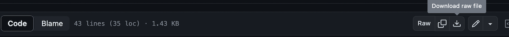

Introduction
PhysiCell Studio is a graphical tool to help create PhysiCell models, run simulations, and interactively visualize results.
A PhysiCell model is primarily defined with a XML configuration file which specifies primary objects: cell types and substrates (sometimes referred to as signals). Each of these primary objects will have several parameters associated with them to define their behaviors. If there is also an intracellular submodel associated with each cell, then additional files will be provided in the configuration file. Other optional files can be provided in the configuration file that provide initial conditions (e.g., cell positions) and cell rules to further define their behaviors.
PhysiCell Studio lets users avoid hand-editing an XML configuration file.
Dependencies
We recommend installing the Anaconda Python distribution (https://www.anaconda.com/products/individual) to have the necessary Python modules (used by the GUI, data parsing, and visualization). In the future, we will provide a self-contained Studio bundled package.
Installation
The most common way to run the Studio is from a PhysiCell root directory. Of course you can always download just the Studio and explore (File->Open) the example .xml configuration files (in its /config folder), however, without an executable model, you won’t be able to run a simulation and plot results. Therefore, we assume you have installed PhysiCell and have compiled a sample model. (In the terminal command lines shown below, PhysiCell has been installed into a directory ~/PhysiCell, but yours may be something different depending how you installed it). To download the Studio and have it be installed in its own directory inside the PhysiCell directory, click this link and download the “get_studio.py” Python script:
Then run the script:
~/PhysiCell$ python get_studio.py
It will download and install the latest version of the Studio into a directory called studio within your PhysiCell directory. The get_studio.py script will also print out sample commands for running the Studio, e.g.:
~/PhysiCell$ python studio/bin/studio.py # if no arguments, it tries to load config/PhysiCell_settings.xml
or,
~/PhysiCell$ python studio/bin/studio.py -c <config_file.xml> -e <executable_program> # be explicit about the config file and executable
and,
~/PhysiCell$ python studio/bin/studio.py --help
(Rather than run the get_studio.py Python script, you can also manually download a specific release of the Studio from https://github.com/PhysiCell-Tools/PhysiCell-Studio/releases).
Note:
there are ways to create an alias and/or a symbolic link to make it easier to run the Studio
you may need to prefix your executable name with ./, depending on your PATH environment variable
this guide will use a Unix-style command syntax; Windows syntax may differ (e.g., you will probably need a “.exe” suffix on the executable program name)